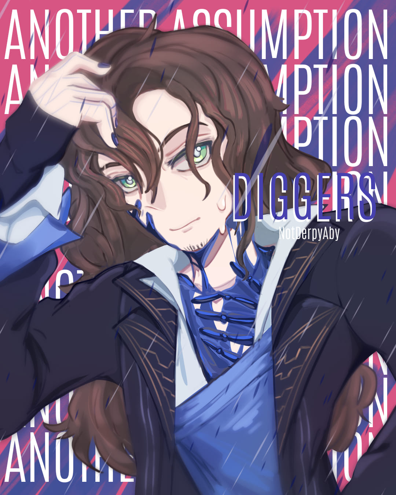

I like to draw digitally and traditionally. ˙⋆✮
I learnt at Woodridge College during elementary
and Angel of the Holy Spirit Academy during pre-school.
I am very proud of how far I've come as a student and person. ๋à£â‘âš


I am Franielle Sales from 9-Faith. ꒰ᐢ. .ᐢ꒱₊˚⊹
I like to draw digitally and traditionally. ˙⋆✮
I learnt at Woodridge College during elementary
and Angel of the Holy Spirit Academy during pre-school.
I am very proud of how far I've come as a student and person. ๋à£â‘âš



XHTML is a stricter and cleaner version of HTML. It aims to replace HTML since it was developed to cater to the fast-paced
growth and improvement of technology.
HTML lists are used to specify lists of information. It can be ordered, unordered, or defined.
Tables allows you to organize and arrange information into columns and rows.
A hyperlink is a reference link that allows you to go to another page of the same document or to another document.
A form allows to gather repsonses or feedbacks from the reader or visitor.


CSS helps with the styling for the webpage. It saves time and gives a more consistent design for the webpage.
‧͙⁺˚*･༓☾I have learnt a lot about HTML coding this quarter.☽༓･*˚⁺‧͙
I wish to learn more and improve my coding skills as well. ≽^•༚• ྀི≼
My favorite lesson so far is HTML lists. I didn't expect my journey to go this well as I
thought
the difficulty spike from the Grade 8 lessons to Grade 9 lessons would be high.
I'm just glad that I am able
to overcome the challenges this 1st Quarter in ICT.
I'd like to thank Ms. Uminga, my classmates, and my family for helping me with everything!♡ ༘*.ﾟ💖
🌹 *ੈ✩‧₊˚More of my favourtie songs! These songs helped me during hard times. â€ İ Ë–âœ¨


૮꒰ ྀི >â¸â¸â¸< ྀི꒱რI made Joker's (Chase Leonardia's) Sash ( ˶ˆᗜˆ˵ )


‧͙⁺˚*･༓☾I have finally improved my coding this quarter!☽༓･*˚⁺‧͙
My favorite lesson in this quarter is CSS! This is because it introduced me to
a new and faster way of designing my webpage. Despite my poor
memory
I somehow managed to 'survive' these past few lessons. I can't wait for the brand new lessons 3rd
Quarter is going to offer me! If it weren't
for my amazing teacher, Ms Uminga,
my classmates, and my family, I would'nt have been able to do it.